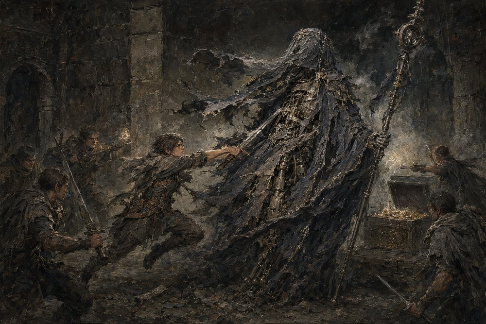

Record 6 of 19
The Widow's chest, and the first Draught
A delver lunges at a veiled, staff-wielding guardian beside a chest overflowing with gold.

Record 6 of 19
A delver lunges at a veiled, staff-wielding guardian beside a chest overflowing with gold.